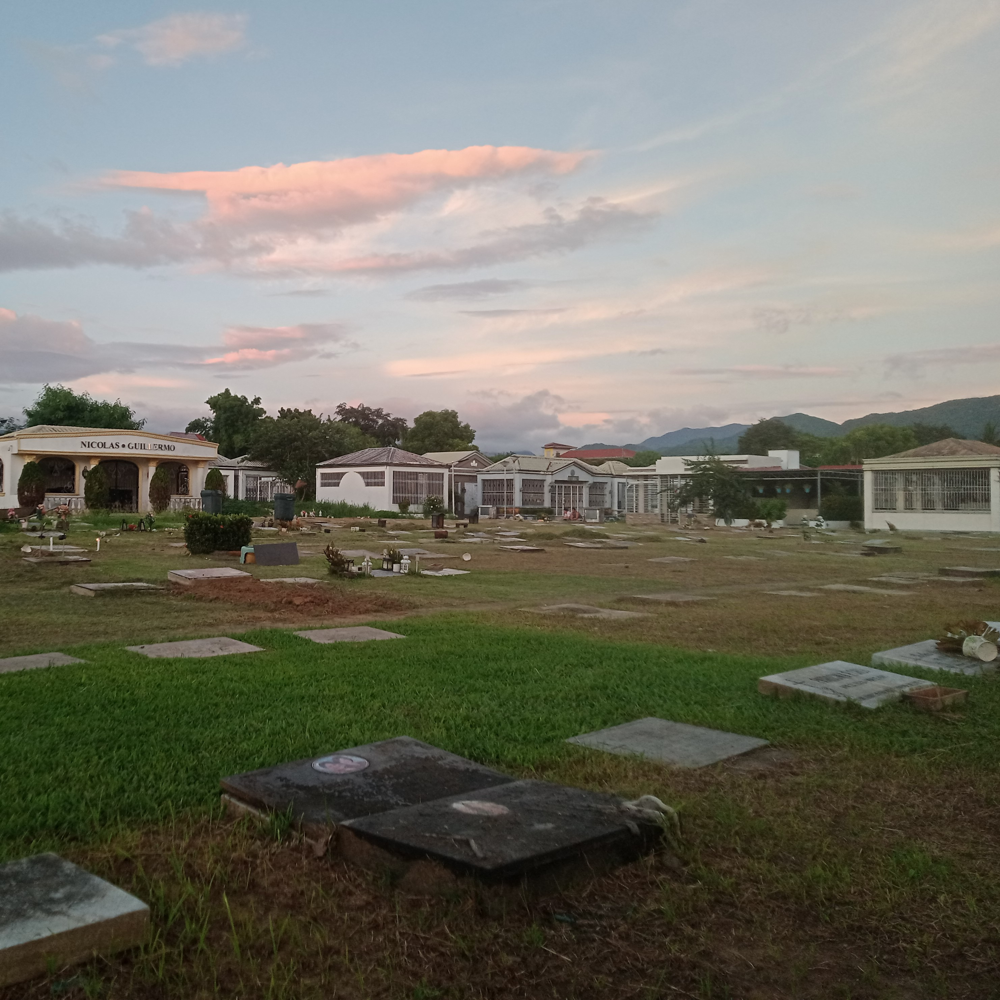
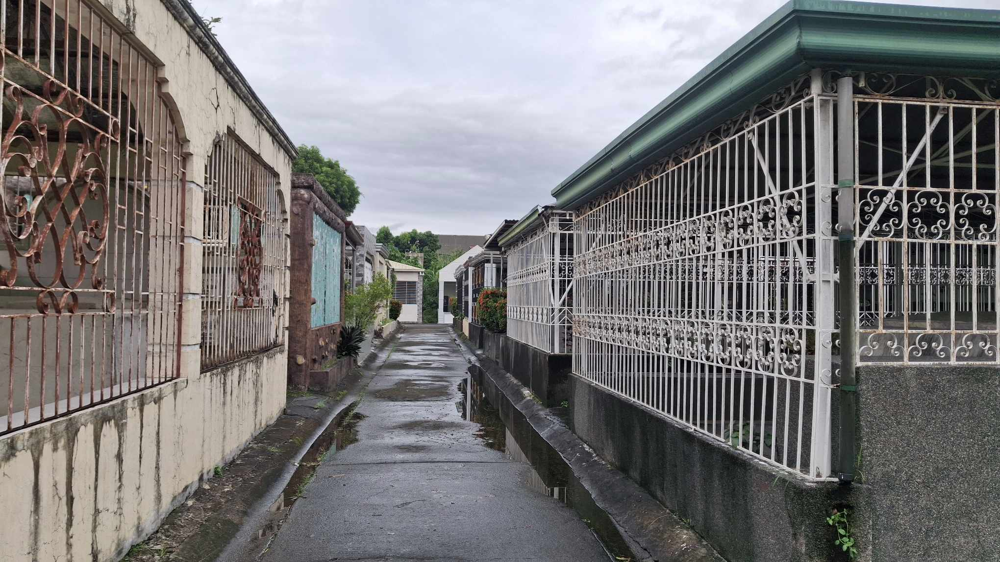
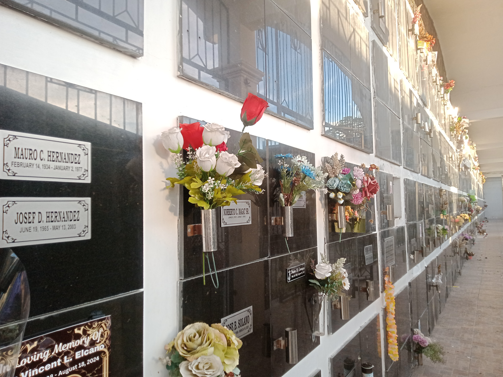
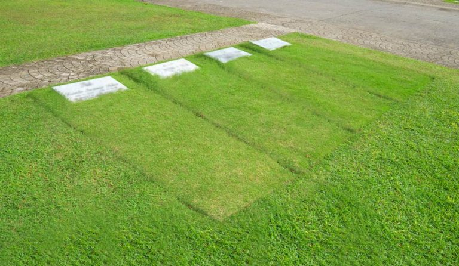
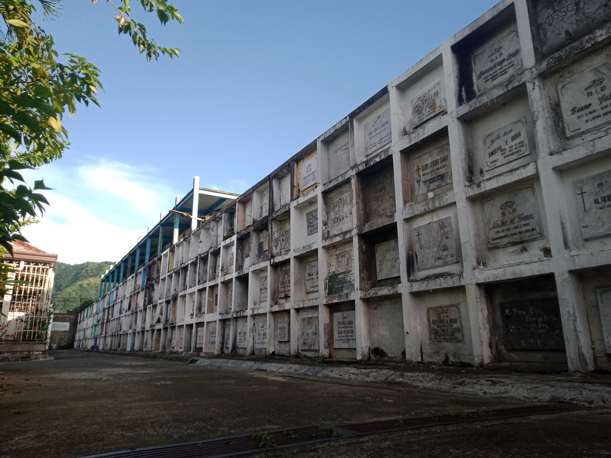

-
For inquiries, please contact us at:
-
700-26301
- Rodriguez Ancestral House, 139 J.P. Rizal St., Barangay Balite,
Rodriguez, Rizal
MONTALBAN MEMORIAL PARK
"Where memories are forever treasured"
Established in 1989, Montalban Memorial Park is a serene final resting place dedicated
to preserving memories and honoring legacies in a peaceful environment.
Learn more

Step into a realm of peace and tranquility at
Montalban Memorial Park in Rodriguez, Rizal
This private memorial park aims to provide comfort to grieving families, offering a sanctuary where memories are forever treasured. Established in 1989, Montalban Memorial Park has been a haven of eternal rest for over three decades.
It has become a sacred ground where memories are cherished, and lives are celebrated. The park's mountain view back drop creates a captivating display of nature’s beauty providing a conducive environment for prayer and reflection.




Explore different gravesites
by categories
The park consists of:
- Family Lots
- Columbarium
- Lawn Lots
- Apartment
See more about lots

Introducing: MMP Mapping App
Be guided and easily locate gravesites within the memorial grounds. Providing an interactive map with precise grave locations, the MMP Mapping App allows you to search for specific plots and navigate directly to you.
Download MMP Mapping App
It is easy to go to
Montalban Memorial Park
The park is easily accessible by both public and private transport. It is situated at the back of the Montalban Municipal Hall and the Our Lady of the Most Holy Rosary Parish Church.